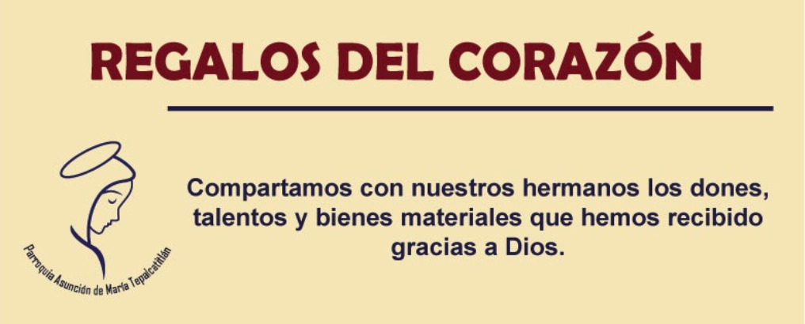
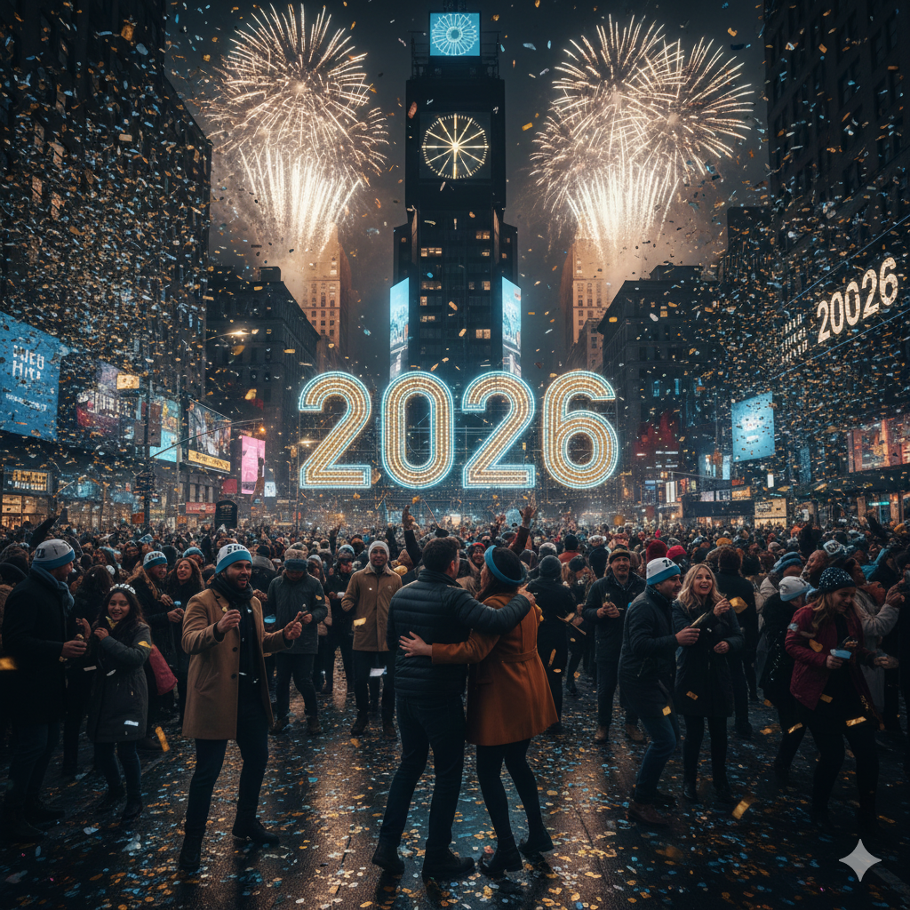
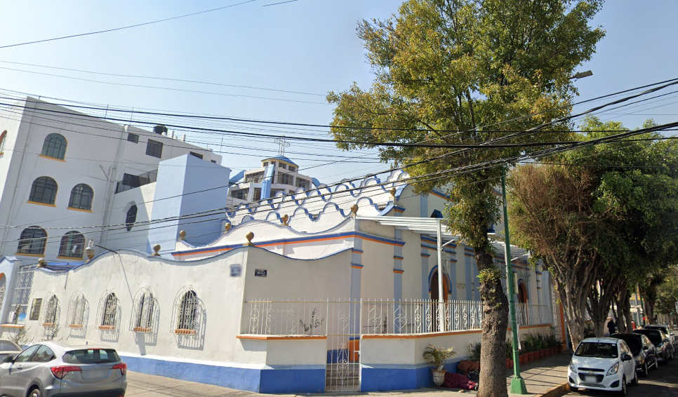
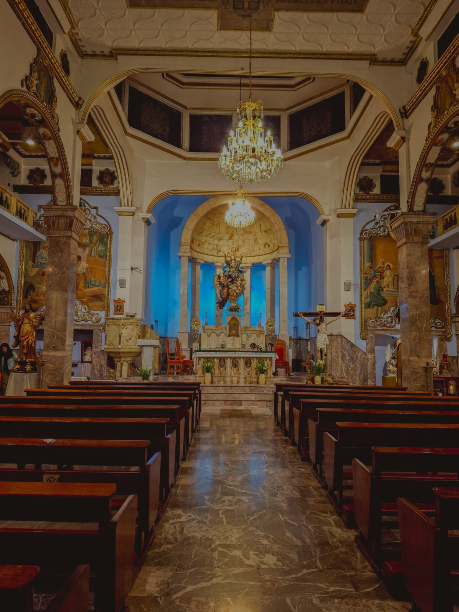
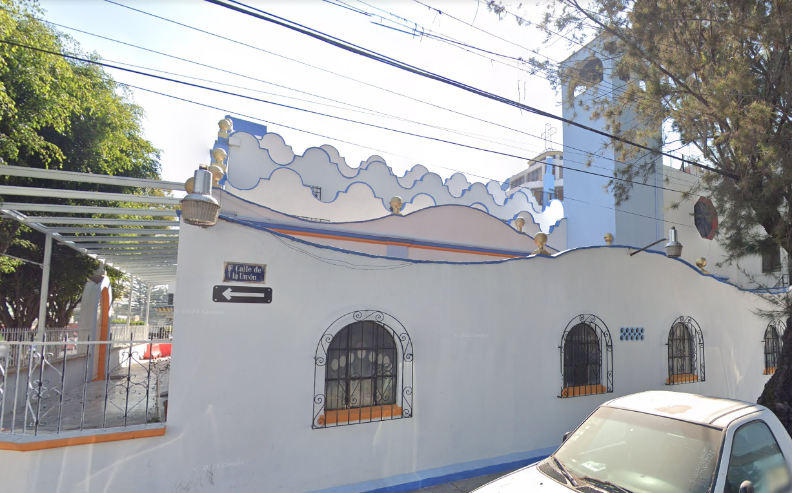

Parroquia Asunción de María Tepalcatitlán
Industrial, Gustavo A. Madero, Ciudad de México
Industrial, Gustavo A. Madero, Ciudad de México

Se llevará acabo el día domingo 11 de enero en un horario de las 10 de la mañana a las 3 de la tarde en el Centro Parroquial en la calle de Unión 17.

Año Nuevo:
¡Bienvenidos, hermanos y hermanas de la Parroquia de la Asunción de María Tepalcatitlán! Aquí les compartimos, con el cariño de nuestra comunidad, una cálida presentación de “nuestra casita espiritual” en la Colonia Industrial:
Somos una comunidad con raíces en el antiguo pueblo de Tepalcatitlán. Aquí, donde hace siglos hubo una capilla dedicada a Santa María, hoy se alza nuestra parroquia, testigo vivo de la historia y la fe que nos une.
Orgullosamente animamos la vida parroquia con actividades para todas las edades:
- Semana Santa: Representaciones vivientes de la Última Cena gracias a los “Evangelizadores Escénicos”.
- Octubre: Rosario misionero viviente en comunidad donde se pide por los continentes.
- Noviembre: Ofrendas y concursos que fortalecen la fraternidad entre los grupos.
- Diciembre: Posadas y pastorelas llenas de alegría y mensaje navideño.
- Formación permanente: Cursos bíblicos, litúrgicos y talleres que nutren nuestra fe y conocimiento.
Desde este espacio abierto y vivo, te invitamos a unirte a nuestra misión: participar en nuestras celebraciones, actividades y proyectos. Aquí, cada historia cuenta, cada voz suma y cada corazón encuentra un lugar.
Nos encontramos en Av. Necaxa 100, Colonia Industrial, Gustavo A. Madero, CDMX, C.P. 07800
Teléfono: 55 5557 4812
Que nuestra Madre, Asunta al Cielo, continúe protegiendo y guiando a nuestra comunidad. Amén.


